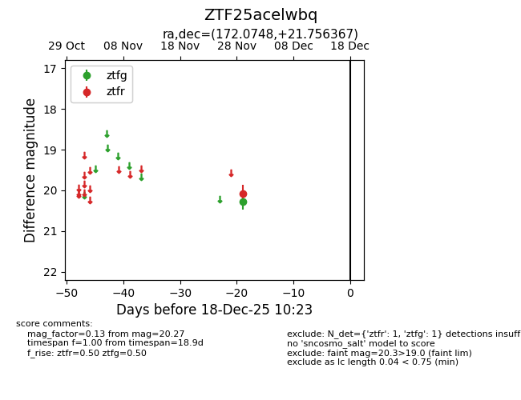
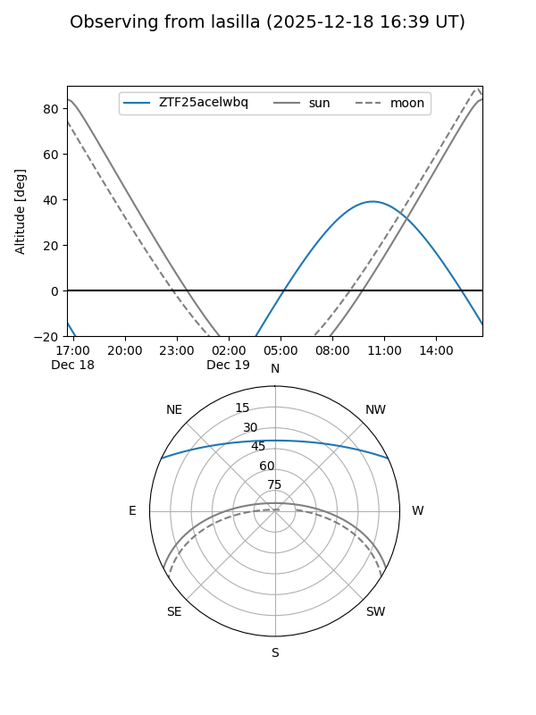
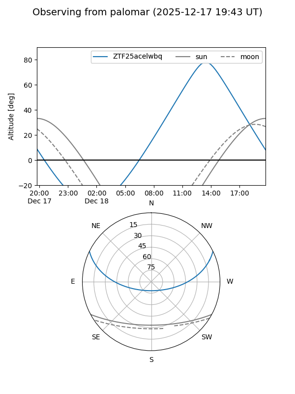

ZTF25acelwbq
Target ZTF25acelwbq at 2025-12-18 11:17
Aliases and brokers:
FINK: fink-portal.org/ZTF25acelwbq
Lasair: lasair-ztf.lsst.ac.uk/objects/ZTF25acelwbq
ALeRCE: alerce.online/object/ZTF25acelwbq
alt names
ZTF25acelwbq (ztf,fink_ztf)
Coordinates:
equatorial (ra, dec) = 172.0748,+21.75637
equatorial (HMS+DMS) = 11:28:17.95,+21:45:22.92
galactic (l, b) = (224.2657,+70.35844)
Photometry
last ztfg=20.27, ztfr=20.08
1 ztfg, 1 ztfr detections
Lightcurve

Visibility


Additional plots